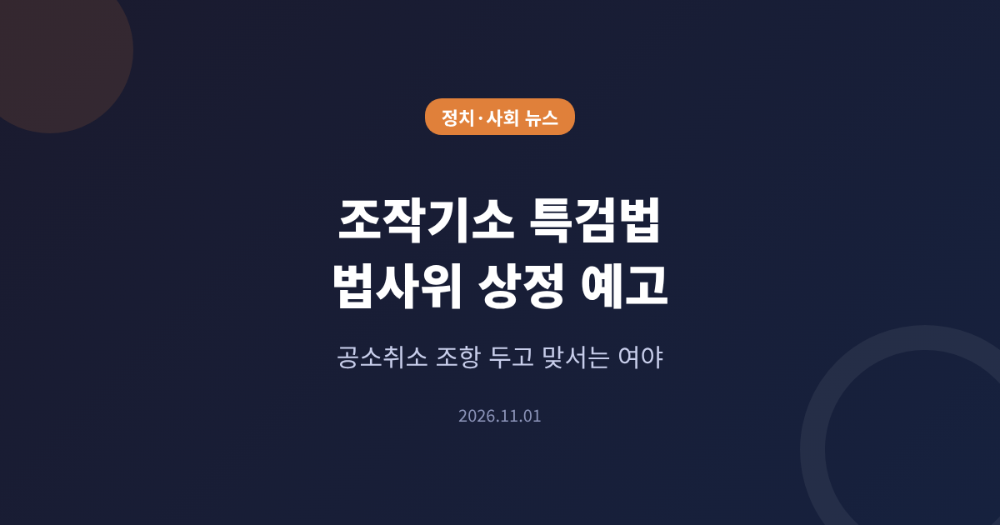
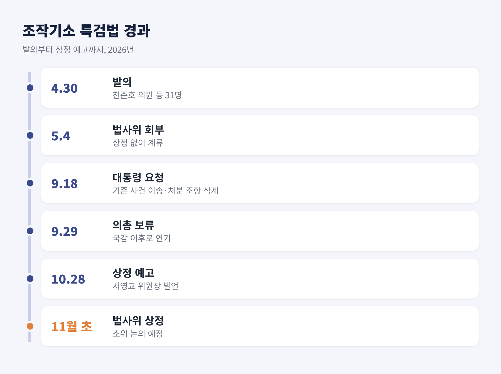
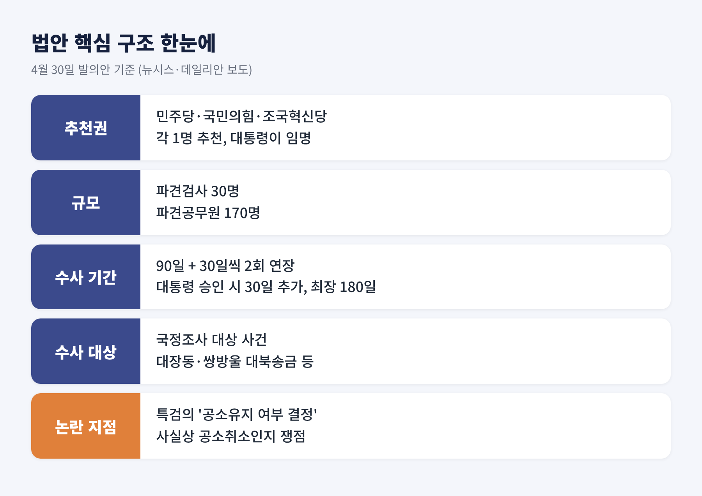
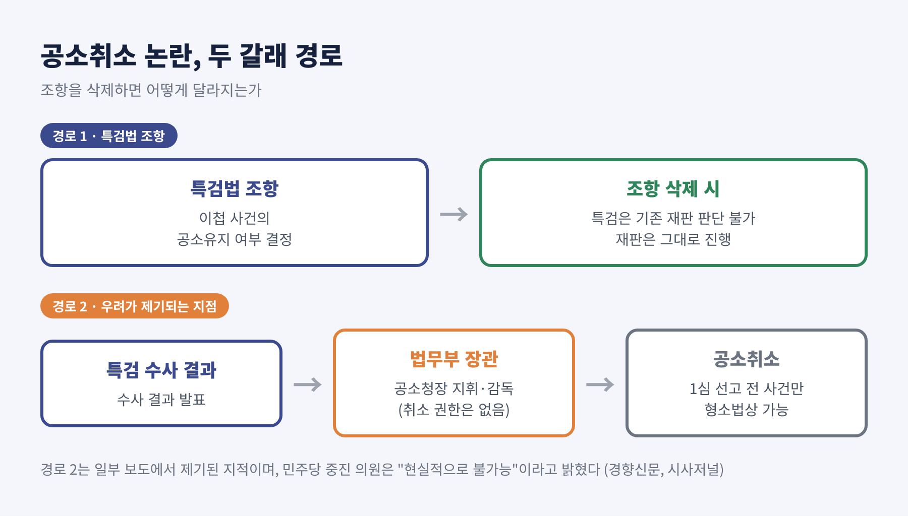
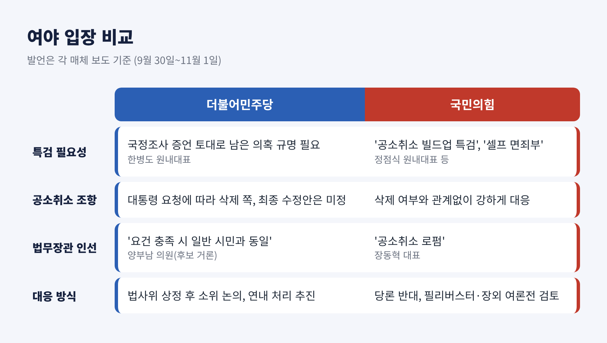
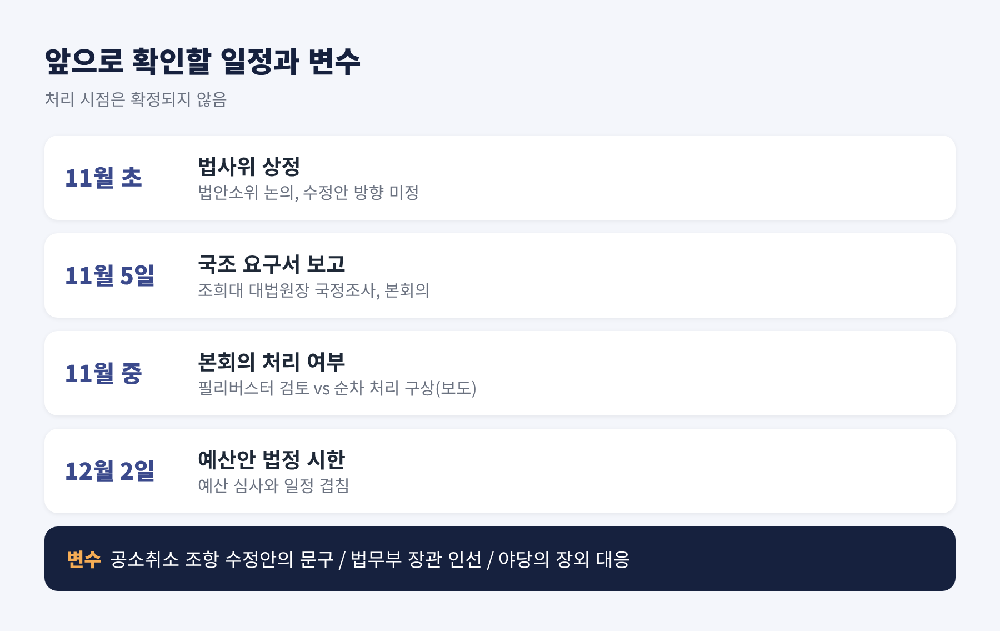

오늘은 다음 주 국회 법제사법위원회에 오르는 '조작기소 특검법'을 정리해 보려 합니다. 핵심은 한 가지입니다. 특검에 이미 기소된 사건의 공소를 어떻게 할지 판단하는 권한을 줄 것인가, 그리고 그 우려가 조항을 빼는 것으로 해소되는가입니다. 여당과 야당의 주장을 나란히 놓고 살펴보겠습니다.
3줄 요약 - 서영교 법사위원장이 10월 28일, 4월 30일 발의 후 계류 중인 특검법을 다음 주 상정하겠다고 밝혔습니다. - 쟁점은 '공소유지 여부 결정' 문구입니다. 사실상 공소취소 권한이라는 지적에 대통령도 9월 18일 삭제를 요청했습니다. - 국민의힘은 당론으로 반대하고 있으며, 본회의 처리 시점은 아직 정해지지 않았습니다.
'조작기소 특검법'의 정식 명칭은 「윤석열 정권 검찰청, 국가정보원, 감사원 등의 조작수사·조작기소 등 의혹의 진상규명을 위한 특별검사 임명 등에 관한 법률안」입니다. 올해 4월 30일 천준호 의원 등 민주당 의원 31명이 발의했고, 5월 4일 법사위에 회부됐습니다. 이후 상정되지 않은 채 계류돼 왔습니다.
멈춘 이유는 공소취소 논란이었습니다. 9월 18일 이재명 대통령이 청와대 기자회견에서 기존 기소 사건의 이송·처분 조항을 삭제해 달라고 국회에 요청했습니다. 민주당은 이를 계기로 10월 1일 본회의 처리를 검토했습니다. 그러나 9월 29일 의원총회에서 국정감사 이후로 미루기로 했습니다.
국정감사가 10월 30일 끝나자 흐름이 다시 바뀌었습니다. 서영교 법사위원장은 10월 28일 "다음 주 법사위에 상정해 소위원회로 넘기겠다"고 밝혔습니다. 연내 처리 여부에는 "원내 지도부와 상의해 최대한 빠른 시간 내에 하겠다"고 답했습니다. 법사위원 한 명은 다음 달을 "사실상 마지노선"으로 표현했다고 서울신문은 전했습니다.

발의안의 뼈대는 이렇습니다. 특검 후보는 교섭단체와 비교섭단체 중 의석이 가장 많은 단체가 한 명씩 추천합니다. 민주당, 국민의힘, 조국혁신당이 추천권을 갖게 됩니다. 대통령이 이 가운데 한 명을 임명하고, 임명하지 않으면 추천 후보 중 연장자가 맡습니다.
규모도 큰 편입니다. 파견검사 30명과 파견공무원 170명을 두고, 수사 기간은 90일입니다. 30일씩 두 차례 연장할 수 있고, 대통령 승인을 받으면 30일을 더해 최장 180일까지 가능합니다. 수사 대상은 올해 3월부터 50일간 진행된 국정조사의 대상 사건들입니다. 대장동·위례 개발 의혹, 쌍방울 대북송금 사건 등이 거론됩니다. 서울신문은 이재명 대통령 관련 사건을 포함해 12건이라고 보도했습니다. 다만 매체마다 사건 열거 방식이 달라, 정확한 목록은 법안 조문으로 확인하셔야 합니다.

법안에는 '공소취소'라는 단어가 없습니다. 대신 특검이 이첩받은 사건의 공소유지 여부를 결정할 수 있게 했습니다. 형사소송법상 검사는 1심 판결이 선고되기 전까지 공소를 취소할 수 있습니다. 그래서 이 문구가 사실상 공소취소 권한을 뜻하느냐가 논쟁이 됐습니다.
대통령의 형사재판이 걸려 있다는 점이 쟁점을 키웠습니다. 시사저널에 따르면 이 대통령의 형사재판 5건은 중단된 상태이며 유무죄는 확정되지 않았습니다. 공직선거법 사건은 지난해 5월 대법원 전원합의체가 유죄 취지로 파기환송했습니다. 1심 선고를 마친 사건이나 파기환송 사건은 일반적인 공소취소가 어렵다는 설명도 함께 나옵니다.
예전엔 조항이 문제였습니다. 지금은 조항을 뺀 뒤에 남는 경로가 문제로 떠올랐습니다. 조항을 삭제하면 특검은 기존 재판의 공소유지 여부를 판단할 수 없고, 재판은 그대로 진행됩니다. 그러나 법무부 장관이 특검 수사 결과를 근거로 공소청장에게 공소취소를 지휘할 수 있다는 지적이 이어집니다. 시사저널은 법무부 장관에게 공소취소 권한은 없지만 검찰총장(공소청장)을 지휘·감독할 수 있다고 설명했습니다.

법무부 장관 자리가 두 달째 비어 있다는 점도 맞물렸습니다. 경향신문은 10월 25일 박균택·양부남 의원으로 후보가 압축됐다고 보도했습니다. 두 의원은 모두 검찰 출신 민주당 의원입니다. 다만 청와대가 공식 지명한 것은 아니고, 두 의원 모두 내정이나 통보를 받은 적이 없다는 취지로 밝혔습니다.
더불어민주당은 필요성을 강조합니다. 한병도 원내대표는 국정조사에서 확인한 자료와 증언을 토대로 남은 의혹을 규명하고 책임을 물어야 한다고 밝혔습니다. 이건태 의원은 국정조사가 '공중전'이었다면 특검은 '지상전'이라고 비유했습니다. 양부남 의원은 공소취소가 법이 허용한 절차이며, 요건을 충족하면 일반 시민과 똑같이 적용돼야 한다고 말했습니다.
국민의힘은 9월 29일 의원총회에서 반대를 당론으로 정했습니다. 정점식 원내대표는 이 법안을 "공소 취소 빌드업 특검"이라고 불렀습니다. 장동혁 대표는 10월 26일 최고위원회의에서 법무부와 공소청을 "이재명 공소취소 로펌"으로 만들려 한다고 비판했습니다. 국민의힘은 조항 삭제 여부와 관계없이 강하게 대응하겠다는 입장도 밝혔습니다.
민주당 안에서도 신중론이 있습니다. 경향신문에 따르면 익명의 초선 의원은 "수사는 필요하지만 공소취소 조항이 오해를 낳았다"고 했고, 재선 의원은 지금은 민생 중심으로 방향을 돌릴 때라고 봤습니다. 반면 지도부 의원은 "여론의 문제가 아니다"라고 말했습니다.

찬성하는 쪽의 논리는 이렇습니다. 국정조사에서 조작 정황이 드러났으니 독립된 수사기관이 확인해야 한다는 것입니다. 특검 추천권을 야당에도 나눠 준 점도 공정성의 근거로 내세웁니다.
우려하는 쪽의 논리도 구체적입니다. 대통령이 임명하는 특검이 대통령 관련 사건의 조작기소 여부를 수사하는 구조가 이해충돌이라는 지적이 있습니다. 더퍼블릭은 3대 특검이 기소한 사건 중 9건이 본류와의 관련성 부족으로 전부 또는 일부 공소기각됐고, 대법원이 7월 수사 대상의 무분별한 확대를 우려했다고 정리했습니다. 이 지적이 이번 법안에 그대로 적용되는지는 별개의 문제입니다. 다만 야당이 특검의 범위와 독립성을 따질 근거가 되고 있습니다.
여론 지표는 한쪽으로 단정하기 어렵습니다. 특검법 자체에 대한 직접 조사는 확인되지 않았습니다. 시사저널이 인용한 리얼미터 조사에서 대통령 국정수행 긍정 평가는 35.3%로 전주보다 2.0%포인트 낮았고, KSOI의 정당 지지도는 민주당 31.5%, 국민의힘 40.5%였습니다.
첫째, 수정안의 모양입니다. 서영교 위원장은 공소취소 조항을 뺀 별도 법안이 검토 중이며 기존 법안과 병합할 수 있다고 했습니다. 데일리안은 10월 28일 당 차원의 구체적 논의가 아직 없다고 전했습니다. 매일일보는 11월 1일 조항을 포함하지 않겠다는 방침을 보도했습니다. 최종안은 법사위 심사에서 드러날 것입니다.
둘째, 국회 일정과의 충돌입니다. 11월 5일에는 조희대 대법원장 국정조사 요구서가 본회의에 보고될 예정입니다. 12월 2일이 예산안 법정 처리 시한이어서, 특검과 국조, 예산 심사가 한꺼번에 겹칩니다. 국민의힘은 필리버스터를 검토하고 있습니다. 민주당은 법안을 나눠 순차 처리하는 방안을 염두에 두고 있다고 보도됐습니다. 다만 토론이 끝나면 여당 단독 표결이 가능해 필리버스터의 실효성이 낮다는 분석도 있습니다. 야당은 장외 여론전에 무게를 싣고 있습니다.
셋째, 법무부 장관 인선입니다. 누가 지명되느냐에 따라 공소취소를 둘러싼 우려가 커질 수도, 가라앉을 수도 있습니다.

정리하면 이렇습니다.
이 법안은 조작기소 의혹을 가릴 것인가라는 질문과, 대통령 본인의 재판에 영향을 줄 수 있는가라는 질문을 동시에 안고 있습니다. 앞의 질문은 수사로 답해야 하고, 뒤의 질문은 조문과 제도 설계로 답해야 합니다. 여당이 두 번째 질문에 얼마나 분명한 답을 내놓느냐가 이번 심사의 관건으로 보입니다.
처리 여부와 시점은 아직 정해지지 않았습니다. 상정 이후 수정안 조문을 직접 확인해 보시길 권합니다. 쟁점이 구호가 아니라 문장 하나에 걸려 있기 때문입니다.
이 글은 2026년 11월 1일까지 보도된 내용을 바탕으로 작성했으며, 인용한 발언은 각 매체 보도에 따른 것입니다.